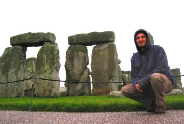
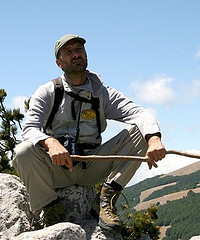

Mi chiamo
Giuseppe Cosenza
Sono l’autore dei testi e delle foto (fatta qualche eccezione) di questo sito.
La mia passione per la natura e per la mia terra si è trasformata in un lavoro:
Svolgo l’attività di Guida Escursionistica (ma anche emozionale), soprattutto nel Parco Nazionale del Pollino dove vivo, ma anche in altre aree protette e non della Basilicata e della Calabria, e ovviamente mi impegno anche nella sua tutela.
Sono anche gestore dell’ Agriturismo Asklepios, quello che mi piace definire “l’Agriturismo più piccolo del mondo”, con l’aiuto dei miei parenti, i cani e i gatti (questi ultimi si occupano dell’animazione per bambini). Ci stiamo preparando per ospitare un asino e chissà forse più di uno…
Attualmente sto progettando un Tour della Basilicata, una terra affascinante e sconosciuta dal punto di vista escursionistico ambientale, tra monti, boschi, chiese rupestri, castelli, calanchi e centri storici.
Non esitate a visitare il Pollino e la Basilicata, è una terra da profonde emozioni. Ovviamente potrete visitarla da soli, ma con una guida centrate gli obiettivi, non perdete i dettagli e soprattutto non sprecate il vostro tempo.
Il sito
www.viaggiarenelpollino.it è nato dall’idea mia e di mio fratello Roberto (il Webmaster) di mettere in rete uno strumento di promozione delle mie attività ma, visto anche i risultati, di realizzare uno strumento efficace di promozione del territorio e delle cose migliori e particolari che offre.

Con chi lavoro? Con chi ho lavorato?
Dal 1999 sono tornato a vivere a Rotonda, nel Parco Nazionale del Pollino, svolgendo la mia attività di guida come attività principale, accompagnando persone e/o gruppi che occasionalmente o abitualmente visitano il Pollino.
Con alcune agenzie o associazioni si è istaurato una collaborazione continuativa, oltre che come guida in senso stretto, anche nella redazione di programmi e nell’organizzazione logistica dei soggiorni:
1. HEADWATER HOLYDAYS (REGNO UNITO) - dal 2005, in lingua inglese.2. FERULA VIAGGI (MATERA) - dal 20023. TREKKING ITALIA (SEZIONE DI FIRENZE) - dal 2001.4. INBACH (SVIZZERA) – dal 2006 in inglese e italiano.5. CONSORZIO DEL DELFINO (MARATEA)
Con altri Enti ho collaborato saltuariamente, in dipendenza delle loro esigenze e della mia disponibilità
1. JOYCE (USA) in inglese2. CAI (DIVERSE SEZIONI) 3. WWF ITALIA (UMBRIA, BASILICATA) prima attività nel 1986, a Perugia4. COOPERATIVA TELLUSMATER (LATRONICO, POTENZA)5. COOPERATIVA ECOAMBIENTE (CHIAROMONTE, POTENZA)6. PANDA AVVENTURA (ROMA) come animatore nei campi per ragazzi.7. ASSOCIAZIONE GUIDE UFFICIALI DEL PARCO
8. ASSOCIAZIONE GAE BASILICATA
9. LAO SRL (LAINO BORGO, COSENZA)10. COOPERATIVA ELFO (PERUGIA), socio fondatore.11. COOPERATIVA SILVA (CASTROVILLARI, COSENZA)12. SCUOLE ELEMENTARI, MEDIE INFERIORI E SUPERIORI
13. WILDERNESSE ANIMATION SERVICE, (LAGONEGRO, POTENZA)14. APT BASILICATA
15. MONDO MARATEA SERVIZI TURISTICI (MARATEA, POTENZA)
Tariffe Escursioni Guidate nel Pollino e dintorni
Gruppi inferiori alle
7 persone
€ 20 pro-capite
Gruppi superiori
Escursione guidata in alta montagna giornata intera
€ 150Gruppi scuola o tour turistici
€ 100Riduzioni non sono applicate nei mesi di Aprile e Maggio
La tariffa non comprende il prezzo di eventuali trasporti in auto, autobus, fuoristrada, cavallo, asino o altro mezzo diverso dalle proprie gambe, che restano a carico del cliente. Se necessario possono essere organizzate visite a bordo dei mezzi di trasporto summenzionati.
{% endblock %}